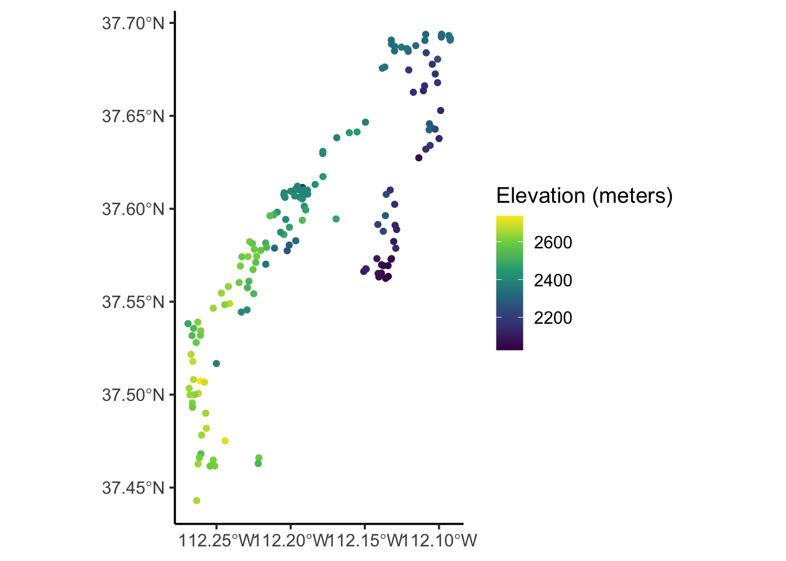
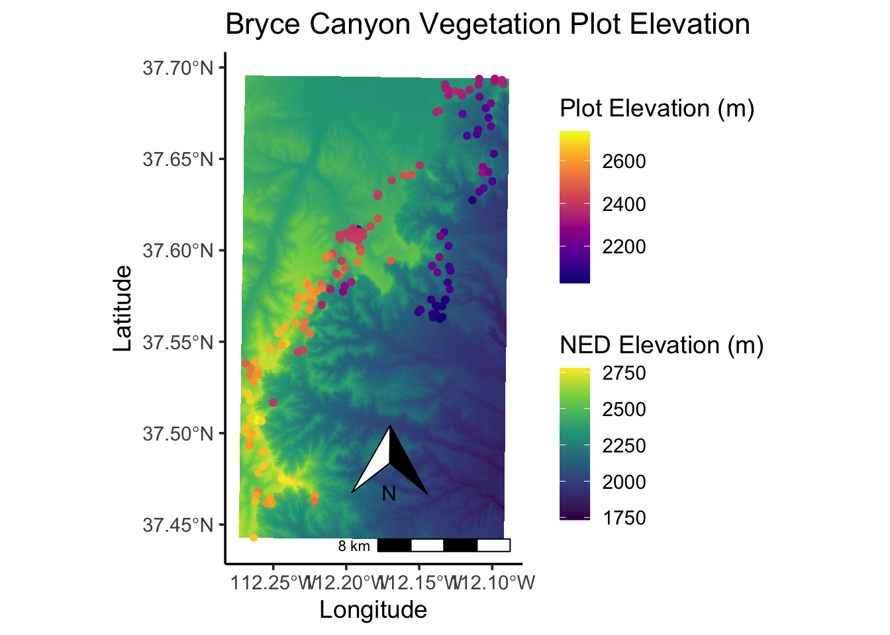
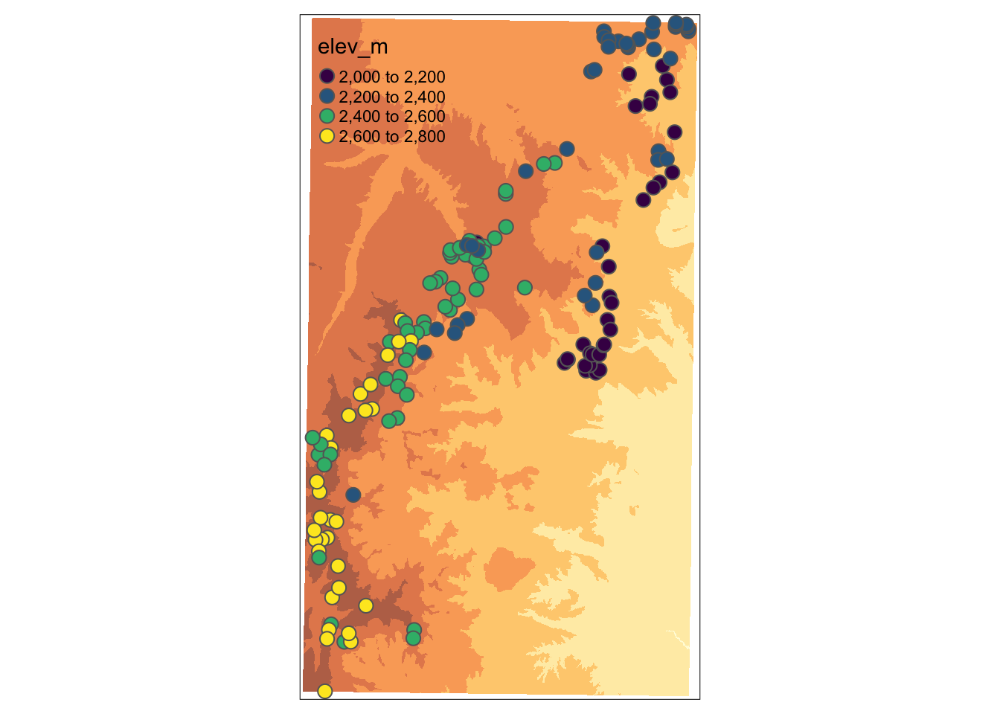
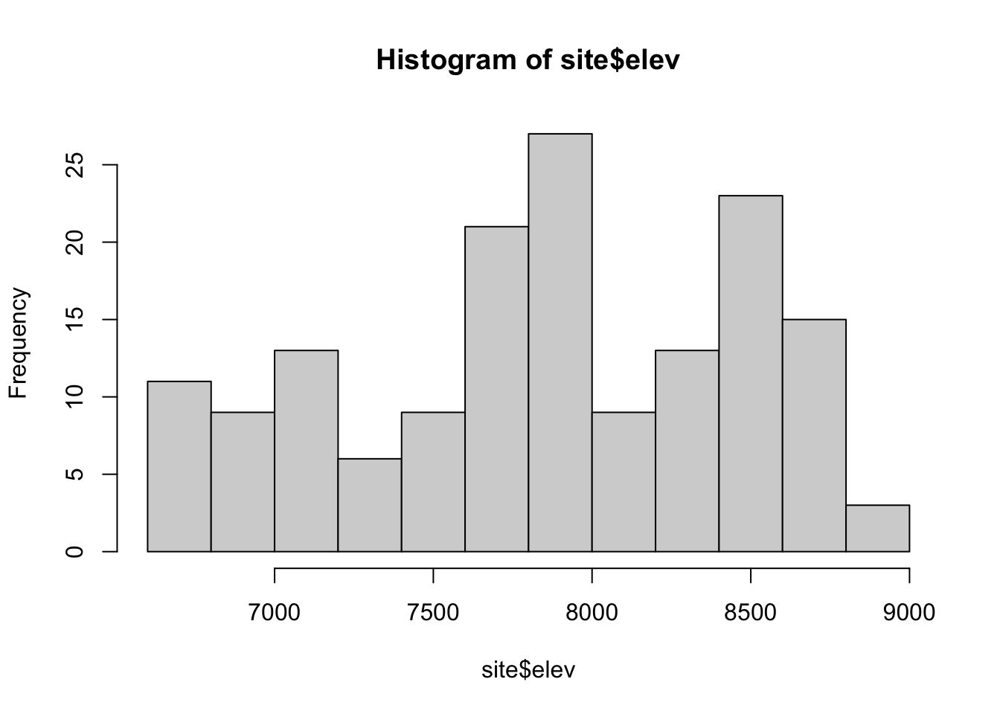
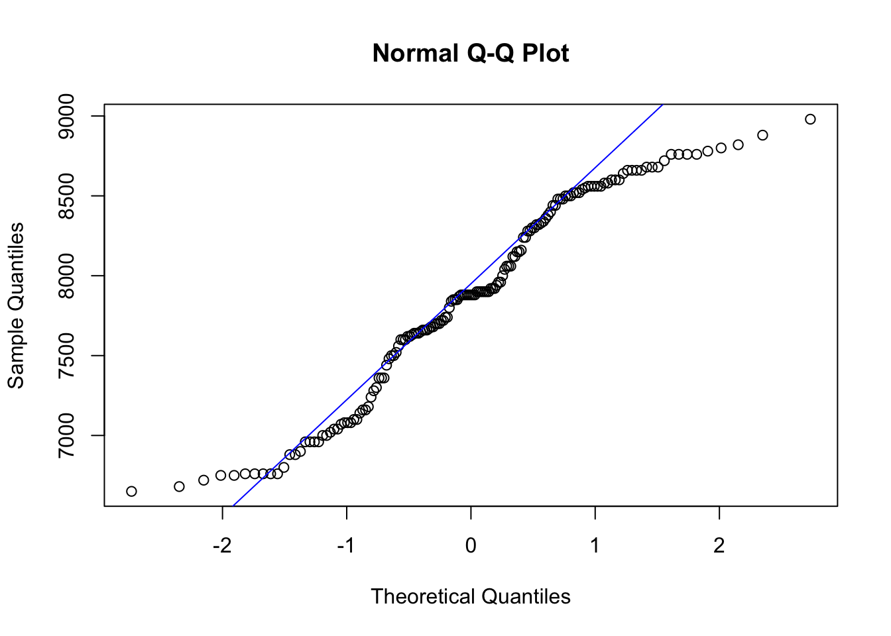
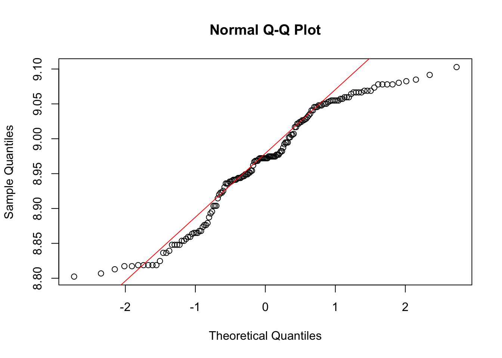

MSU Graduate Spatial Ecology Lab 4
Phoebe Zarnetske; plz@msu.edu
Sep 2015; rev. Sep 24, 2019, Sep 23-27, 2020
Lab 4: Spatial Autocorrelation (Moran’s I, Mantel Test)
This lab has 2 Parts. You need to hand in Part 2 as a PDF produced from R Markdown, including output plots, statistics, code, and text for answers to the questions below. When referring to the code below it may be more useful to use the .Rmd file linked above. OPTIONAL: If you would like to test out GitHub in completing this lab, complete your .Rmd file in RStudio and push your PDF (and your .Rmd if you want) to a repository. You can add the link to the GitHub file when you submit to D2L. Please also submit your PDF to D2L.
This lab uses the the brycesite environmental data from the same study used in Lab 1. See this link for more information on these data: http://ecology.msu.montana.edu/labdsv/R/labs/lab1/lab1.html and http://ecology.msu.montana.edu/labdsv/R/labs/lab2/lab2.html
The variable list for the site variables is here: https://www.rdocumentation.org/packages/labdsv/versions/2.0-1/topics/brycesite. A few notes: east=easting; north=northing; elev is recorded in feet; we will convert to metric.
These data come from a vegetation survey in Bryce Canyon National Park, Utah. It’s an amazing place with unique formations! For more about Bryce Canyon see: https://www.nps.gov/brca/index.htm

https://upload.wikimedia.org/wikipedia/commons/4/4d/USA_10654_Bryce_Canyon_Luca_Galuzzi_2007.jpg
Part 1: More practice plotting spatial data
Start working in R:
##### STARTING UP R
# Clear all existing data (or don't and just make sure you start with a newly opened RStudio session; see why this may not be so great for reproducibility: https://rstats.wtf/save-source.html#rm-list-ls)
rm(list=ls())
# Close graphics devices
graphics.off()
# Set the paths for your work
output_path<-("output")
# if this folder doesn't exist, create it
if(!dir.exists(output_path)){
dir.create(output_path)
}
# Create the folders (directories) "data" and "lab4" - If they exist already, this command won't over-write them.
data_path<-(file.path("data","lab4"))
if(!dir.exists(data_path)){
dir.create(data_path,recursive = TRUE)
}If you previously saved your workspace and want to load it here, do so this way:
load(file.path(output_path,"lab4.RData"))
NOTES on R packages used in this lab:
- With R Markdown, it is helpful to install packages locally before knitting (copy this into your R console before you knit).
for (package in c("ape", "ncf", "ggplot2", "sp", "labdsv", "ggmap", "proj4", "rgdal","ggspatial","raster")) {if (!require(package, character.only=T, quietly=T)) {
install.packages(package)
library(package, character.only=T)
}
}
Load the packages:
library(dplyr)
library(ggplot2)
library(ape)
library(ncf)
library(sp)
library(labdsv)
library(FedData)
library(ggspatial)
library(ggmap)
library(raster)
# Apply ggplot2 theme to remove gray background and set the base font size as 14. See: https://ggplot2.tidyverse.org/reference/ggtheme.html for more theme options.
theme_set(theme_classic(base_size = 14))
# Call the data directly because it's loaded in the labdsv R package
data(brycesite)
## If you wanted to read it in another way, you could do so this way:
# if(! file.exists(file.path(data_path,'brycesite.R'))){
# download.file("http://ecology.msu.montana.edu/labdsv/R/labs/lab2/brycesite.R", dest=file.path(data_path,"brycesite.R"), mode="wb")
# }
# site<- read.table(file.path(data_path,"brycesite.R",header=TRUE, row.names=1), exdir = data_path)
# make a copy called "site"
site<-brycesite
# Take a look at the site, remove any NAs in locations
head(site)
summary(site)
site<-subset(site, site$east != "NA",)
site<-subset(site, site$north != "NA",)
site$elev.ft<-site$elev # make a copy of elev
site$elev <- site$elev.ft * 0.3048 # convert feet to meters
# Plot the data in space, by elevation
coords <- site[, c("east", "north")]
coordinates(coords) <- c("east", "north")
crs.geo <- CRS("+proj=utm +zone=12 +datum=WGS84")
proj4string(coords) <- crs.geo
dat <- site[,c("plotcode", "elev")]
elevdat <- SpatialPointsDataFrame(coords = coords, data = dat)
spplot(elevdat, zcol = "elev")
# Take a look at the underlying elevation from the National Elevation Dataset (NED) using the FedData R package
# Returns a raster
NED <- get_ned(
template = elevdat,
label = "bryce"
)Plot the elevation raster and the vegetation data plot locations on the same map. Practice using ggplot2 for this plotting. First, project the raster to the veg data projection so we can plot them together (you could instead project the veg data shapefile (which is vector data) with the raster CRS, and you should project vector rather than the raster if you plan on doing any spatial analysis with them both). We’re just plotting so it’s ok.
raster::crs(NED)
NED<-projectRaster(NED,crs = raster::crs(coords))
# Create a dataframe out of the NED raster. This is a necessary step for plotting rasters with ggplot2.
NED_df = as.data.frame(NED, xy = TRUE)
head(NED_df)
# Create a dataframe out of the elevdat shapefile
elevdat_df = as.data.frame(elevdat)
head(elevdat_df)
# Plot the NED with the points overlaid. See how the elevation in the points aligns with the NED
NED_elev<-ggplot() +
geom_raster(data = NED_df,
aes(x = x, y = y, fill = bryce_NED_1)) # x and y are defined as the column names, "x" and "y"
NED_elev
# Now add on the vegetation plots and their associated elevation from the elevdat data, and change the color of the raster.
NED_elev<-ggplot() +
geom_raster(data = NED_df, aes(x = x, y = y, fill = bryce_NED_1)) +
scale_fill_gradientn(colours = terrain.colors(10)) +
geom_sf() +
geom_point(data = elevdat_df, aes(x=east, y=north), size=2) +
coord_sf(crs=crs(elevdat)) # define the coordinate ref system based on elevdat
NED_elev
# Now add a north arrow and scale with R package ggspatial, and color code the plot locations based on "elev" from the plot dataset.
NED_elev<-ggplot() +
geom_raster(data = NED_df, aes(x = x, y = y, fill = bryce_NED_1)) +
scale_fill_gradientn(colors = terrain.colors(10), name="NED Elevation (m)") +
geom_sf() +
geom_point(data = elevdat_df, aes(x=east, y=north, color=elev), size=2) +
scale_colour_gradientn(colors=c(low = "black", high = "white"), name="Plot Elevation (m)") +
ggtitle("Bryce Canyon Vegetation Plot Elevation") +
annotation_scale(location = "br", width_hint = 0.4) +
annotation_north_arrow(location = "br", which_north = "true",
pad_x = unit(0.75, "in"), pad_y = unit(0.5, "in"),
style = north_arrow_fancy_orienteering) +
coord_sf(crs=crs(elevdat))
NED_elev
Or you could use ggmap to pull in a terrain map and overlay the plots on top. This ggmap uses Lat Lon, which isn’t as ideal for inter-point distances. It’s better to stick with analysis using the UTM meters. But this ggmap can make some nice maps. It also has terrain options, roads, etc.
?get_stamenmap # see the details on the commands
bc_map <- get_stamenmap(bbox = c(left = -112.5, bottom = 37.25,
right = -111.9, top = 37.8),
zoom = 10)
ggmap(bc_map)# Convert UTMs for plots to Lat Lon so they can plot on top of ggmap object.
coords <- site[, c("east", "north")]
sputm <- SpatialPoints(coords, proj4string=CRS("+proj=utm +zone=12 +datum=WGS84"))
spgeo <- spTransform(sputm, CRS("+proj=longlat +datum=WGS84"))
# Merge in the elevation data
elevdat <- SpatialPointsDataFrame(coords = spgeo, data = dat)
# for plotting, convert to data frame and merge in the elevation data
elevdat.dat<-data.frame(elevdat)
# Hint: If you used my bounding box from above, this will look a little too small.
p <-ggmap(bc_map)
p + geom_point(aes(x = east, y = north, colour = elev), data = elevdat.dat, size = 2) +
theme(legend.position="right")
Part 2: Moran’s I and Mantel test
Moran’s I in package ape
Check assumptions about the elevation data; an assumption of the Moran’s I test is that data are normally distributed. Determine whether data should be transformed. Some transformations to consider: square-root, log.
hist(site$elev)
shapiro.test(site$elev)##
## Shapiro-Wilk normality test
##
## data: site$elev
## W = 0.95485, p-value = 5.093e-05qqnorm(site$elev)
qqline(site$elev,col="blue")
shapiro.test(log(site$elev))##
## Shapiro-Wilk normality test
##
## data: log(site$elev)
## W = 0.94937, p-value = 1.689e-05qqnorm(log(site$elev))
qqline(log(site$elev),col="red")
site$log.elev <- log(site$elev)
# Compute distance matrix
data.dist <- as.matrix(dist(cbind(site$east,site$north)))
# Check the maximum distance within the site (units = meters)
max(data.dist)## [1] 31583.48# Create an inverse distance matrix
w <- 1/data.dist
diag(w) <- 0
# Histogram breaks & counts
hist(data.dist)$breaks## [1] 0 2000 4000 6000 8000 10000 12000 14000 16000 18000 20000 22000 24000 26000 28000
## [16] 30000 32000hist(data.dist)$counts## [1] 2303 2406 2674 3262 2710 2698 2874 1968 1260 762 644 606 512 432 146 24# Plot the distance matrix with one option of Distance classes
# (note: these may not be the most informative classes)
hist(data.dist,main="Histogram of distances with classes chosen",xlab="Distance (meters)",col="gray",ylim=c(0,4500))
abline(v=c(0,4000,8000,12000,16000,20000,24000,28000),col="purple",lwd=2)#Compute Moran's I
Moran.I(site$log.elev, w, scaled = T, na.rm = T, alternative = "two.sided")## $observed
## [1] 0.5036994
##
## $expected
## [1] -0.006329114
##
## $sd
## [1] 0.01934851
##
## $p.value
## [1] 0Moran.I(site$elev, w, scaled = T, na.rm = T, alternative = "two.sided")## $observed
## [1] 0.5048929
##
## $expected
## [1] -0.006329114
##
## $sd
## [1] 0.0193532
##
## $p.value
## [1] 0QUESTION 1:
Interpret Moran’s I results. Is there a more appropriate form of elevation data (transformed or non-transformed) for this test?
Next, create a Correlogam for Elevation using correlog using a specific increment for distance classes (here shown with 1000m increments; use a different distance class in your example).
cor.elev <- correlog(site$east, site$north, site$elev, increment = 1000, resamp = 100)
plot(cor.elev, col = "blue")
abline(h = 0, col = "purple")
cor.lelev <- correlog(site$east, site$north, site$log.elev, increment = 1000, resamp = 100)
plot(cor.lelev, col = "red")
abline(h = 0, col = "purple")
fit <- invisible(correlog(x = site$east, y = site$north, z = site$elev, resamp = 100, increment = 1000))
#How many classes are significant by alpha = 0.05?
length(which(fit$p <= 0.05))
plot(fit$mean.of.class, fit$correlation, pch = 19, "black", ylab = "Correlation coefficient", xlab = "Distance (mean of class)", main = "Correlogram for elevation change")
QUESTION 2:
Plot and interpret your correlograms. Explain your choice of Distance Classes.
QUESTION 3:
Perform a statistical test to determine if your peaks are significant. Hint: look at your correlog output. Which ones are significant?
Mantel Test
Now use the Mantel test to compare differences in elevation at specified points to the distance between those points. This will help you determine whether plots that are closer together have more similar elevations, and if plots that are farther apart have more dissimilar elevations. In this case we’re treating the space between sampling locations (their geography) as the predictor variable which is predicting the elevation values.
# We already have the euclidean distance matrix (data.dist)
# Compute the distance between elevation measurements
elev.dist <- as.matrix(dist(cbind(site$elev, site$elev)))
# Run a Mantel test on the two matrices
mant.results <- ape::mantel.test(m1 = data.dist, m2 = elev.dist, nperm = 999, alternative = 'two.sided')Next, choose a NEW VARIABLE from the site dataframe. Plot the variable in space (see the code for plotting elevation on a map, above). The variable list for the site variables is here: https://www.rdocumentation.org/packages/labdsv/versions/2.0-1/topics/brycesite.
QUESTION 4:
What are the general patterns of the NEW VARIABLE across space? Do you expect your NEW VARIABLE to be spatially correlated with elevation across the study region? Why or why not?
QUESTION 5:
Run a Mantel test to look at correlations between the matrices of the two variables (a Mantel test between your NEW VARIABLE distance matrix and elev.dist).
You will need to create your NEWVARIABLE.dist like this:
NEWVARIABLE.dist <- as.matrix(dist(cbind(site$NEWVARIABLE, site$NEWVARIABLE)))
Interpret the results of the Mantel tests relative to your predictions from Question 4. You may want to run correlog() on your NEW VARIABLE to help with interpretation.

This work is licensed under a Licensed under CC-BY 4.0 2020 by Phoebe Zarnetske.